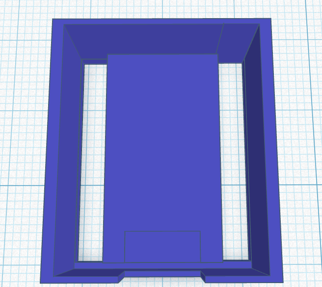
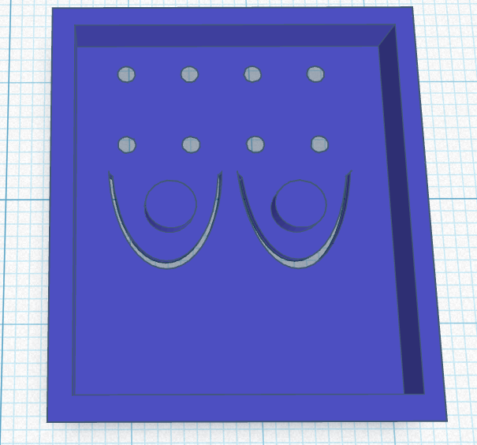
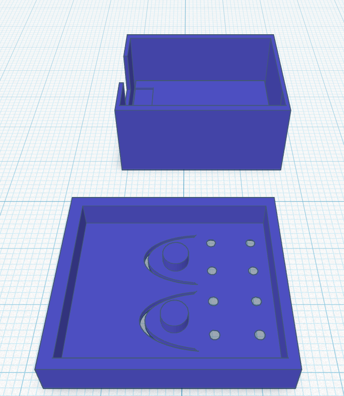

The final design is the result of the improvements and lessons learned from both previous prototypes. After refining the dimensions, adjusting the lid fitment, and enhancing the overall appearance, the enclosure successfully met all project requirements.
The final case proved to be a perfect fit for the ESP32-C3 Zero. The board sits securely inside the enclosure, while the lid aligns correctly and can be easily installed and removed when required. All ports remain accessible, and the enclosure provides excellent protection without adding unnecessary size or weight.
The finished design successfully achieves the project's goal of creating a practical, durable, and visually appealing case for the ESP32-C3 Zero. It is suitable for both development and deployment in IoT and embedded systems projects.



| Criteria | Prototype 1 | Prototype 2 | Final Design |
|---|---|---|---|
| Fit and size | Too tight — board did not fit (internal supports too large) | +1 mm length; board inserts easily | Optimised tolerances; precise, secure fit |
| Ventilation / cooling | Few holes, mostly on the lid; below the minimum | More holes on sides and lid; adequate airflow | Vents increased and centred; uniform airflow |
| Ease of printing | Printed, but minor defects and a deformed wall | Good quality; clean layers | Excellent quality; robust, no critical supports |
| USB-C & pin access | USB-C fine; GPIO pins protruded from the bottom | GPIO accessible; pins protected | Full access to USB-C and all pins |
| Button access | Flexible buttons stuck (pins too long) | Buttons work from the lid | BOOT/RST pressable without opening the case |
| Protection / strength | Side wall deformed when the lid was inserted | Solid structure; deeper floor protects the pins | Strong walls and floor; pins fully shielded |